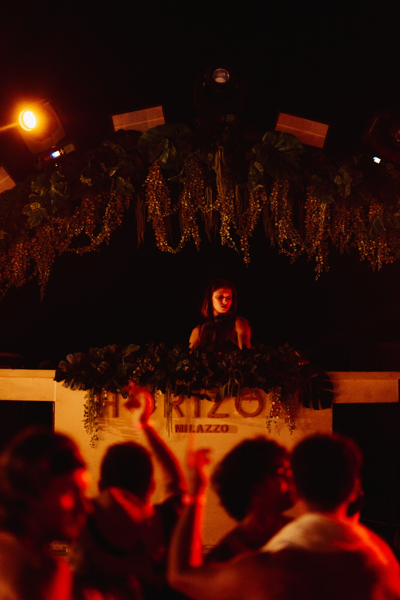
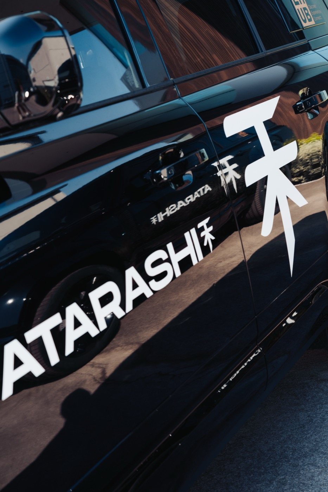
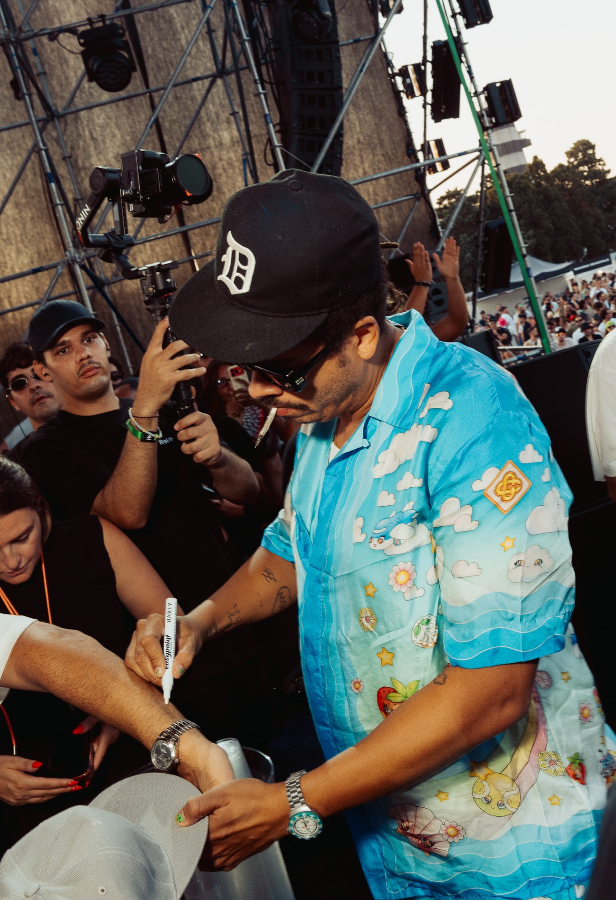
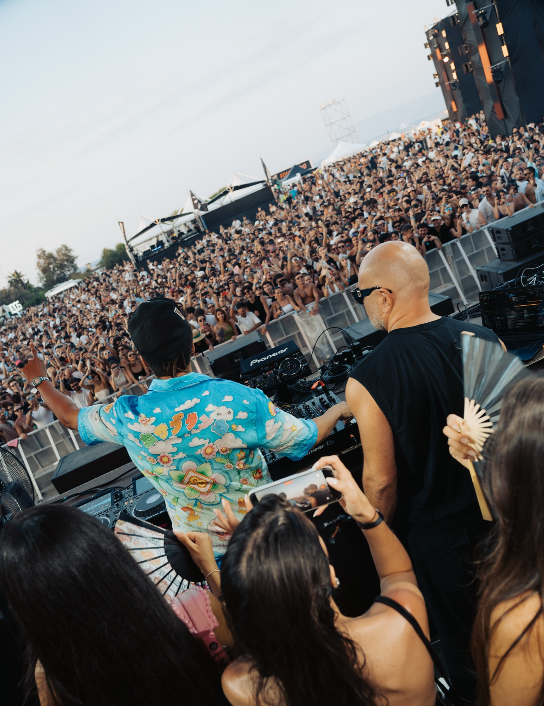
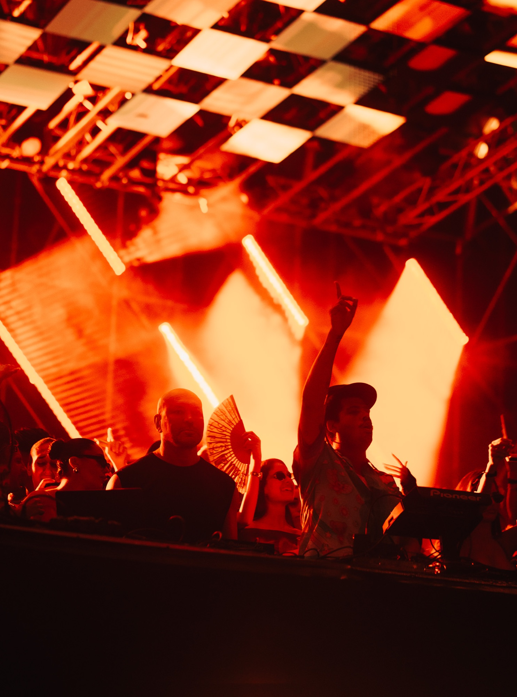
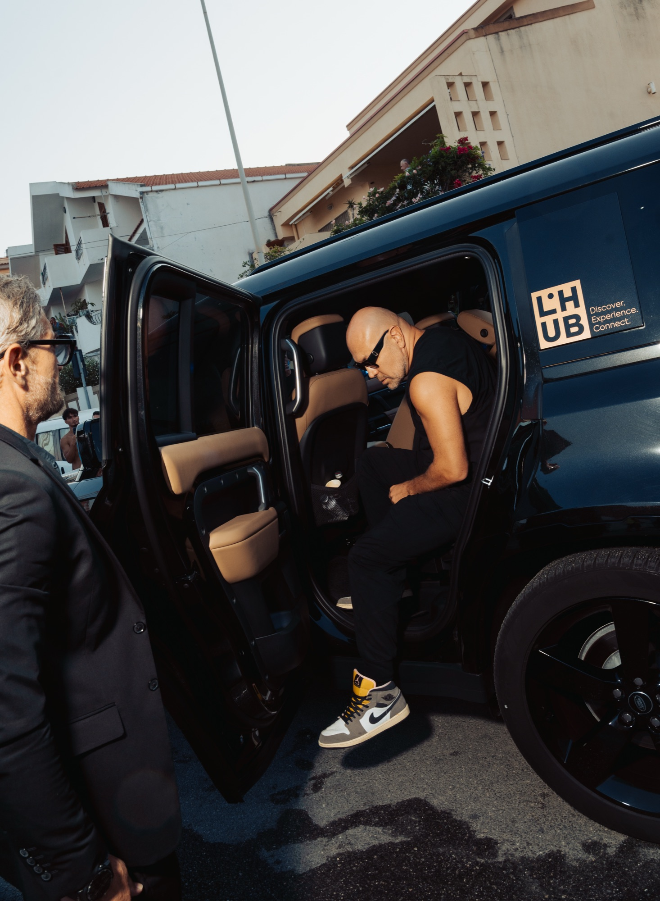
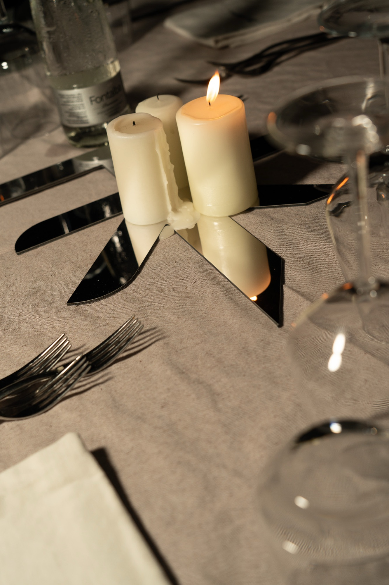
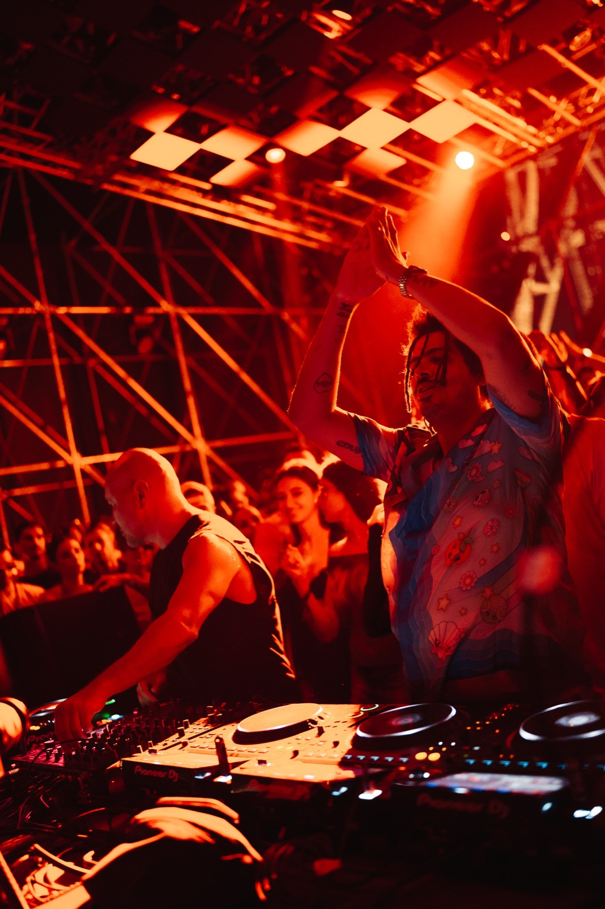
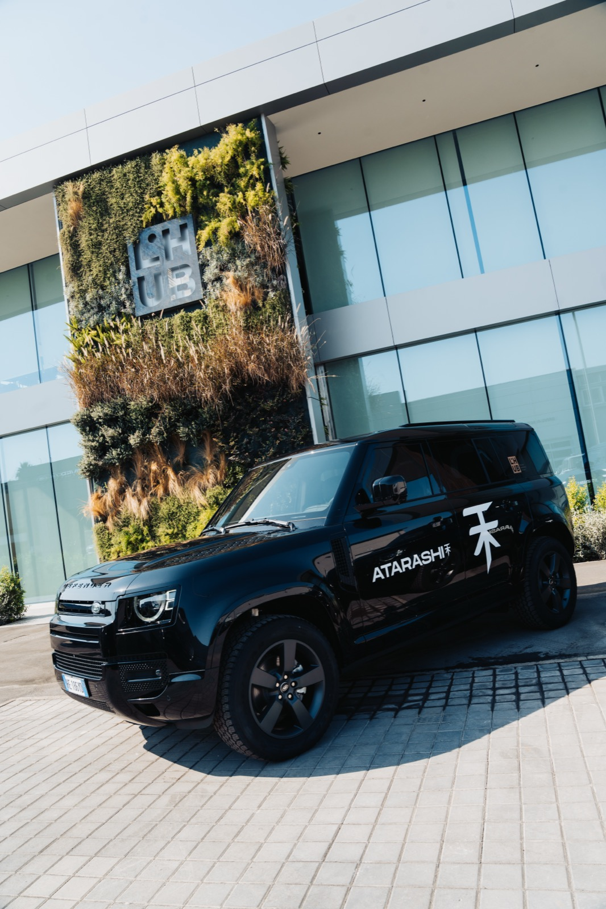
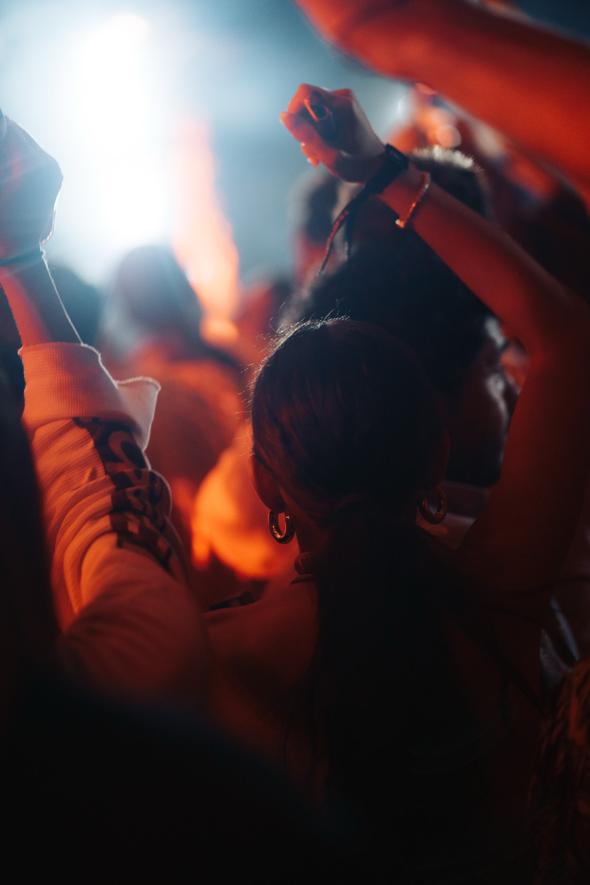

Client · Atarashi
Three nights across the Strait of Messina — La Punta, Bellavista, Horizon and Capo Peloro — covered from a production pass: artists, sponsors, stage and crowd.
← Back to PhotographyAtarashi brought its first Sicilian edition to the Strait of Messina this August — a dinner at Bellavista and a night at La Punta on the 31st, a sunset set at Horizon in Milazzo on the 1st, and the main festival at Arena Capo Peloro on the 2nd. I covered all three legs.
Same brand, three completely different rooms — a seated dinner under string lights, a botanical DJ booth at a beach club, then an outdoor arena built for a few thousand people. The job was reading each one on its own terms, not applying one look to all three.

There wasn’t a fixed shot count. The brief was need-based: artists with the Defenders, sponsor imagery, the cars themselves, arrivals, stage and DJ coverage, crowd and atmosphere — plus video for cinematic and DJ-set content, some of it earmarked for a future showreel. Roughly half the delivery ended up being video, half stills.

Torre Faro sits at the narrowest point of the Strait of Messina, barely 3.6km from Calabria — and the old high-voltage pylon that once carried power across the water, decommissioned since the cables went undersea in the ’90s, still marks the skyline. From above, the geography does the explaining: how a peninsula built for a night like this actually sits between the two coasts.
Most of what’s here isn’t posed — it’s timing. An artist signing a fan’s arm mid-set. Someone’s hands going up at the exact second the light changed. I’d rather miss a shot waiting for the real one than stage a fake version of it.



The Defenders — a pair of Land Rovers in Atarashi livery, tied to L’Hub — were part of the brief, not a detail I added on my own. Covering the arrivals alongside the stage is what separates shooting a party from documenting a production: the cars, the artists getting out of them, the hours before anyone’s on the mic.

Bellavista the night before, Capo Peloro the night itself — candlelight on linen, then a checkerboard roof turning a whole crowd into silhouette. Different rooms, same attention to what’s easy to miss.

Atarashi came to me through a professional relationship built over previous work with someone inside the organization — not a cold booking. Briefing happened in two steps, a call and then a video call with the Paris team, before I ever landed in Messina. On site I worked with a production pass, moving through the working areas rather than shooting from the crowd — which meant helping out where the production needed it too, from supporting another videographer on audio to swapping a microphone setup mid-shift when the plan changed. Most of the real problem-solving was logistics and traffic around three venues in three days, not anything creative.

Being embedded in the production rather than shooting from the crowd meant moving constantly between four different vantage points — the cars and arrivals, the artists backstage, the booth, and whatever the drone could see that no one on the ground could. A mix of what that actually looked like, photo and video together.


I don’t direct crowds and I don’t ask an artist to redo a moment. I get close, stay out of the way, and trust that a real weekend will give me more than anything I could stage. Elegant, energetic, cinematic — that was the language I wanted for a project like this to read from Messina as clearly as it would from anywhere else Atarashi runs.
Three nights, one weekend — this is where it landed.
Not an exact quote — a paraphrase of feedback given directly by the client. Atarashi's team pointed to the quality and usefulness of the material, the dedication and flexibility behind the production, and a broader visual vision that went beyond the basic deliverable — a commitment to the whole production, not just the brief.
Photography + video, one production, three nights
For event producers and brands who need coverage from inside the production — not just from the crowd.
Start a project